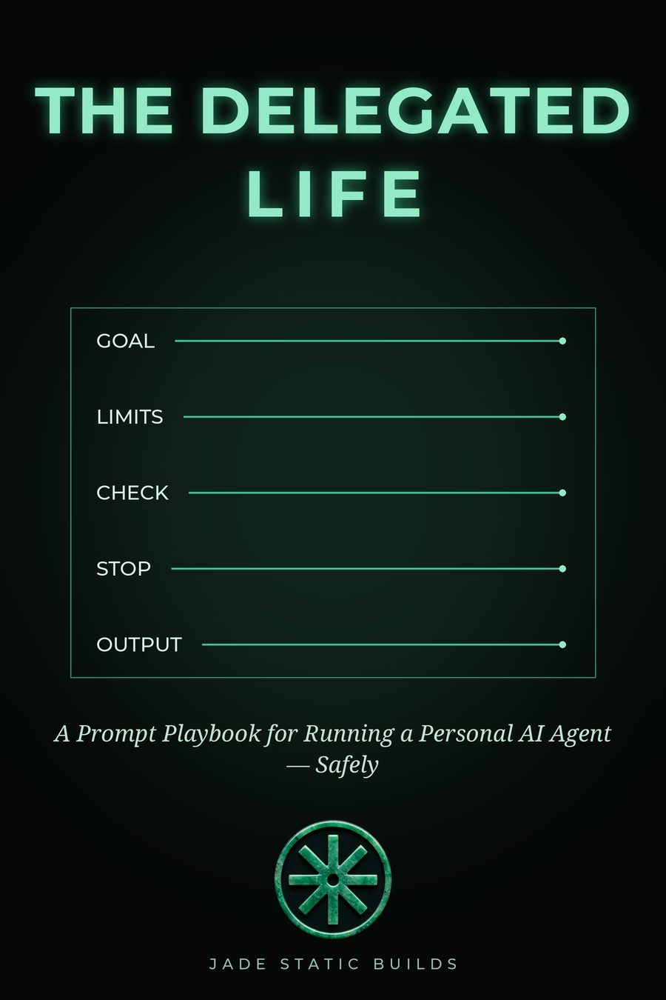

JADE STATIC BUILDS
Prompt Playbook
The free app. Built from a working system that runs dozens of published apps, a daily content program, and a weekly review, with approval gates on anything public. You do not need to know anything about prompts. Agentic AI means the agent does a job for you, not just answers a question. You give it a goal, limits, a check, and a stop rule, and it works to those rules. This page teaches you the tiers, then builds a prompt you can try right away. This page only builds the prompt text. Paste it into an AI chat to use it, it does not run an agent or set a schedule by itself.
1. The tiers, in plain words
Higher is not always better. A higher tier gives the agent more freedom, so use it only when you trust the rules you gave it. For anything public, irreversible, or paid, stay at a lower tier with your own approval.
Tier 1: Just ask
You do: ask one question. The agent does: answer it, then stop.
Example: "What is the weather in Miami tomorrow?" Good for a fact. Bad for a job, because there are no limits, no check, and no stop rule.
Tier 2: Do a task
You do: give a goal, limits, a check step, and a stop rule. The agent does: the task, once, and shows you the result for approval.
Example: "Compare two phones under $500. Only use verified prices, show the best first, and do not buy anything without my yes." Most good everyday prompts live here.
Tier 3: Run an area for me
You do: hand over a whole area with standing rules, what is allowed, what is never allowed, and how it reports back. The agent does: keep running that area, and judge its own work honestly.
Example: "Keep my prompt collection useful. Review it, flag templates nobody uses, and report what changed and why. Never publish or change an app without my yes." This is a system, not a single task. Standing rules are rules you set once that travel with every task in the area, so you never re-explain them.
Tier 4: Run it on a clock
You do: take a Tier 3 system and put it on a schedule. The agent does: run it at set times, stay quiet on quiet days, and report only what changed.
Example: "Every morning at 9, check social trends, adapt 2 or 3 post ideas, and report them. Never publish, like, comment, or follow from this job." On a clock means it runs at set times, and stays quiet when nothing changed. The schedule does not remove your approval for anything public.
Beyond this: Tier 5 is one review that manages all your other systems, deciding what to keep, change, or retire. Tier 6 is turning a personal system into a public tool other people can use. You do not need those to start. Start at Tier 2.
2. What do you want to do?
Add details (optional, makes the prompt much stronger)
Tap an idea below if you are not sure where to start, or type your own.
How far do you want to go? Tap a tier. This changes what the prompt includes.
Make my prompt builds around your idea and the tier you picked. Random prompt picks a random idea and a random tier, then explains that tier for that prompt, so you learn by seeing it.
Your saved prompts
Private by design:
- No account, no signup.
- Your prompts and ideas are never sent anywhere. They live only in this browser.
- Anonymous visit counts (GoatCounter) help us see which parts get used. Prompt content is never tracked. Use Export below as your backup.
Your briefs live here. Your contracts, rules, and systems live below, in My Playbook.
The part free prompt lists skip: gates and stop rules
A prompt tells an agent what to type. A system tells it what it may do alone, what needs your approval, and what must never happen. That second part is called the governance layer, and it is why delegations stop blowing up.
A filled delegation contract looks like this:
Mandate: keep my weekly budget tidy. May do alone: review spending and draft a report. May do with my approval: suggest changes to the budget. Never: move money, pay a bill, or change an account. Reporting: one short report after each run. Stop: if a number does not add up, stop and say so.
Before: "Handle my budget." (No limits, no gate. Anything could happen.)
After: the contract above. Same job, now it can be trusted with it. The full governance chapter, with the gate matrix and the stop-rule library, is Chapter 6 of the book below.
Build yours, save it, and hand it to your agent. The Contract builder is below, in this app.
Three decision prompts, free to use
Three doors: "Give me 3 genuinely different directions for this. One line each on what makes it different. Then I will choose."
Do less: "What is the smallest version of this that is still worth shipping?"
Stranger test: "Explain this to someone who has never seen any of my stuff."
Seven more, each taught with an example, are in the Templates section below.
Go deeper
This app is the whole system now, free: the complete book, The Delegated Life, the Contract builder, all eleven templates, fillable worksheets, and a 7-day plan to set up your own first delegated system. It is all below, on this page.
The book and the tools below are in English for now. Everything above keeps its four languages.
How it works, in one line: a good prompt says what you want, what the limits are, how to check it, and what must never happen. We add those parts for you, so you do not have to learn them first. What's missing? Tell us on GitHub: prompt-playbook issues. Prompts are used one at a time here, not chained together.
Prompt Playbook, the free app, v2026.11.9, updated Nov 8, 2026. A Jade Static Builds project, built with Muse.
The Delegated Life: the book
The complete book, free, inside the app. Eight chapters. Your place is kept on this device. The book and the tools below are in English.

The Delegated Life
A Prompt Playbook for Running a Personal AI Agent — Safely
Search the book
Chapters
Delegation Contract builder
Chapter 4, as a tool. One contract per area you hand over. Write it in your own words.
From the book — Chapter 4, on the mandate
Gates, never-lines, reporting & stops — the full contract (starter never-lines are already inside)
Starter defaults are pre-filled below — edit or delete any line. They are a starting point, not a complete list: add the never-lines this area needs.
How much of your time this system may cost you each week — reports, approvals, fixes, all of it. Your number, in your words. Blank is fine.
Template library
All eleven templates from the book, as fill-in forms. Fill, copy, save.
New here?
Start with Template 1 — the Tier 2 Skeleton. It is the Pattern itself, and every other template is a variation on it.
Brief Builder
The manual form: type the parts yourself, copy the brief. (This is the Brief Builder app, folded in.)
Brief Builder
Brief an AI agent so it can run without you. Fill the fields, copy the brief, paste it to your agent.
Workspace
Where you stand
The Agent Pack hand-off
Assemble the Agent Pack with your playbook inside it — your asks, rules, and contracts — and hand it to your own AI agent so it can coach you through the book.
My playbook
Your contracts, your standing rules, your asks — in your words. Stored on this device only.
My contracts
My standing rules
The book's starter set is below — keep, edit, or replace with your own. Rules in your own words are rules you'll keep.
My asks, by tier
Run the interview in Tools to add asks the guided way.
My data
Your playbook is yours. Export it as JSON to back it up or move it; import restores it.
The 7-Day Plan
Chapter 8's plan, one day at a time. Check a day off when it's honestly done.
From the book — Chapter 8, on graduating
Graduation tracker
Promotions are earned: three good runs at the current stage. (Chapter 8.)
Tools
Tier Self-Assessment — the interview
One ask at a time. Sorting rules from the book: searching and comparing run alone, the transaction needs approval; drafting runs alone, sending needs approval; anything irreversible without your yes is never.
Worksheets
The book's five worksheets, fillable. Saved only on this device. Worksheets 3 and 5 are the interactive tools on this page, so they point there instead of duplicating them.